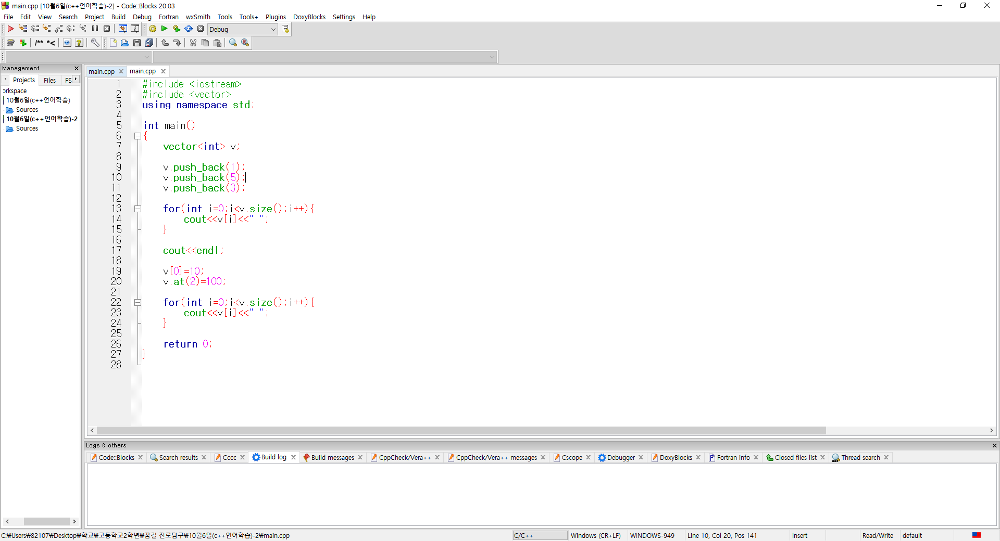
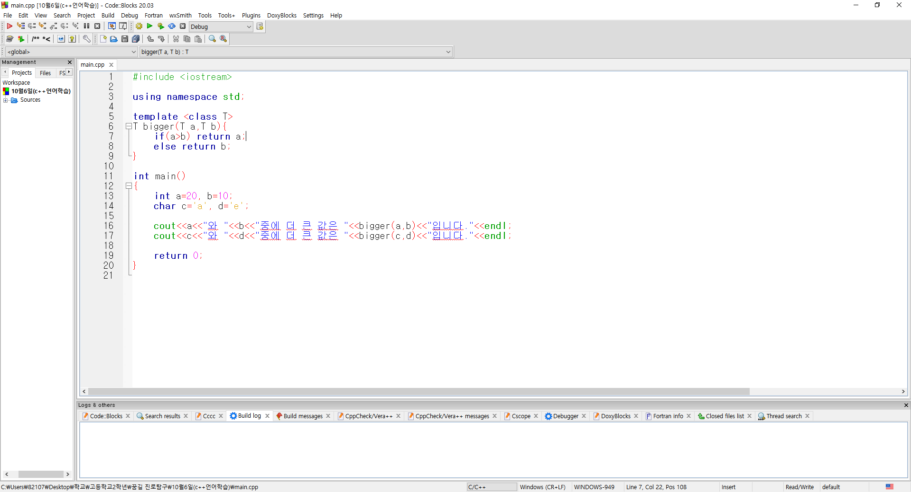
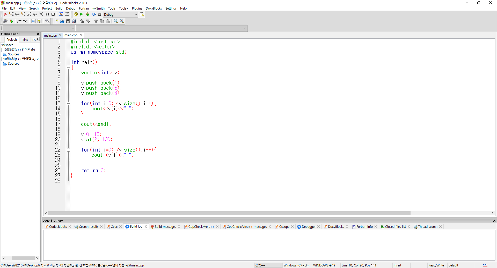
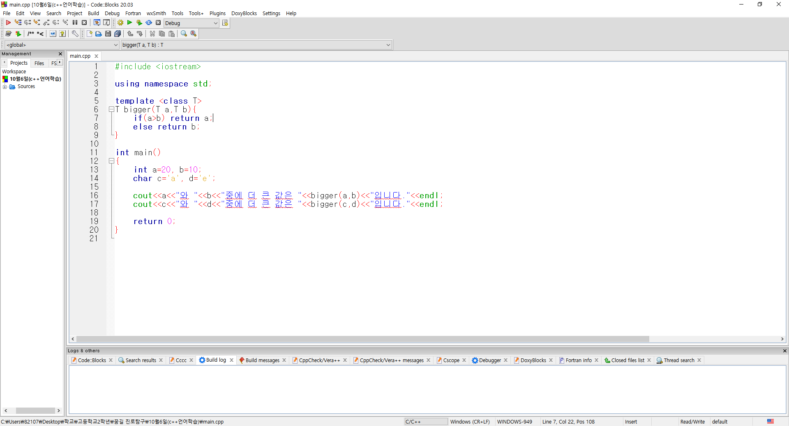

2번째 차시는 c++코드를 학습하였습니다.
c++에서 클래스 함수의 심화 단계인 제네릭 클래스 함수를 사용하여 크기를 비교하고 더 큰 값을 출력하는 프로그램을 제작하였습니다.
또한 vector의 사용방법을 익히고 요소를 바꾼 뒤 출력하는 벡터 함수를 작성하였습니다.
여태까지 배운 내용을 복습하기 위해서 vector를 사용하여 타자연습과 유사한 구조의 프로그램을 제작해보았습니다.
string이나 vector와 같은 코드를 이해하는 것이나, 타자연습 프로그램을 제작할 때 긴글을 넣으면 한글이 프로그램에서 상응하지 않는 문제점 등 어려움을 겼었지만,
마지막에 제작한 타자연습 프로그램을 이용하여 string과 vector함수를 다시 복습하며 활용하고, 한글을 영어로 대체하는 등의 아이디어로 바꾸어 프로그램 제작을 이어갔습니다.
ifstream를 사용하여 만들었는데, 파일을 사용하여 프로그램을 제작하는 것에 신기함을 느꼈고, 프로그램을 제작하는 방법에는 다양한 방법이 있다는 것을 느꼈습니다.